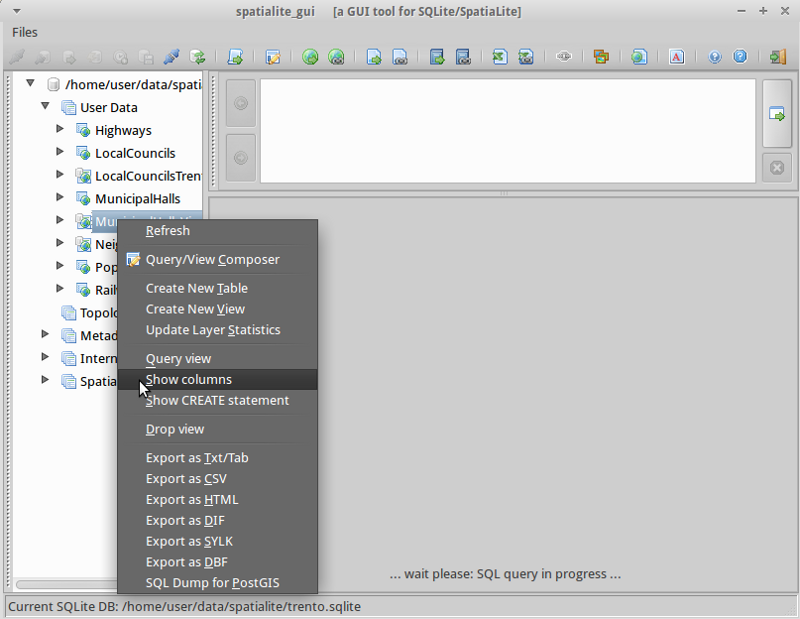
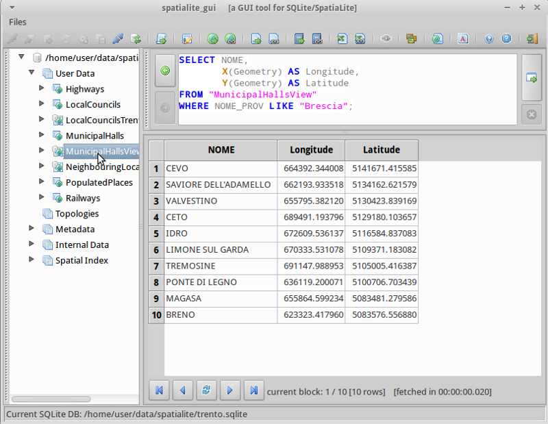

Inicio Rápido de SpatiaLite¶
SpatiaLite es un motor de base de datos SQLite con funciones espaciales agregadas.
SQLite es un sistema de gestión de base de datos (DBMS) que es simple, robusto, fácil de usar y muy ligero. Cada base de datos SQLite es simplemente un archivo. Puede libremente copiar, comprimirlo y portarlo entre Windows, Linux, MacOs, etc.
Esta Guía de Inicio Rápido describe cómo abrir una base de datos spatialite desde la línea de comandos y aplicaciones de GUI. Se muestran algunos ejemplos de consultas SQL.
Contents
Inicie Spatialite y cargue una base de datos¶
SpatiaLite-gui proporciona una interfaz visual para ver y mantener una base de datos spatialite. Fácilmente puede ver la estructura de los contenidos de tablas y datos usando punto y haga clic en acciones, muchos de los cuales construcción consultas SQL comunes, o crear sus propias consultas SQL.
Abra la GUI de Spatialite seleccionando .
Seleccione
Busque el directorio
/home/user/data/spatialitey elija file:trento.sqlite.
Haga clic derecho sobre la tabla de MunicipalHallsView y seleccionar «Mostrar columnas»
Usted notará que la pantalla se divide en 3 áreas:
- El panel de la izquierda muestra la jerarquía de la base de datos, por ejemplo, una lista de tablas y columnas dentro de la tabla. Haga click derecho en los elementos del panel izquierdo para seleccionar de una lista de acciones comunes de la base de datos.
- El panel superior derecho muestra el SQL para la acción seleccionada. Puede introducir su propio SQL personalizada en este panel.
- El panel derecho inferior muestra los resultados de la consulta SQL.
Haga click derecho sobre la tabla de MunicipalHalls y seleccionar «Editar filas de tabla». Observe la consulta SQL que ha sido creada para usted en el panel derecho superior y los resultados en la parte inferior derecha.:
SELECT ROWID, "PK_UID", "AREA", "PERIMETER", "COMU", "Geometry" FROM "MunicipalHalls" ORDER BY ROWID
{kind=link}
Ejecutar una consulta SQL¶
Ahora trate de afinar esta sentencia SQL para obtener NOME y (Lat, Long) para sólo los campos NOME_PROV incluyendo «BRESCIA», esta vez usando el MunicipalHallsView. En el panel superior derecho SQL teclee:
SELECT NOME, X(Geometry) AS Longitude, Y(Geometry) AS Latitude FROM "MunicipalHallsView" WHERE NOME_PROV LIKE "BRESCIA";
Haga click en el botón «Ejecutar SQL» a la derecha y vea los resultados en el panel inferior derecho.

{kind=link}
Ejecute spatialite desde la línea de comandos¶
Los usuarios que necesitan de la escritura o automatizar las consultas van a aprender las ventajas de trabajar con una base de datos spatialite desde la interfaz de línea de comandos. En este ejemplo, cargaremos un shapefile y buscaremos las escuelas que están cerca de la autopista 42.
Antes de trabajar desde la línea de comando, debemos abrir una ventana de terminal: .
En la terminal abra una base de datos con spatialite tecleando:
spatialite /home/user/data/spatialite/trento.sqlite
Comandos útiles desde la línea de comandos:
.help .tables .quit
Cree una nueva base de datos spatialite y cargue un shapefile¶
Vamos a crear una base de datos spatialite nuevo, vacío y cargar dos archivos de la base de datos de north_carolina:
user@osgeo-6:~$ spatialite test.sqlite SpatiaLite version ..: 3.1.0-RC2 Supported Extensions: - 'VirtualShape' [direct Shapefile access] - 'VirtualDbf' [direct DBF access] - 'VirtualXL' [direct XLS access] - 'VirtualText' [direct CSV/TXT access] - 'VirtualNetwork' [Dijkstra shortest path] - 'RTree' [Spatial Index - R*Tree] - 'MbrCache' [Spatial Index - MBR cache] - 'VirtualSpatialIndex' [R*Tree metahandler] - 'VirtualFDO' [FDO-OGR interoperability] - 'SpatiaLite' [Spatial SQL - OGC] PROJ.4 version ......: Rel. 4.8.0, 6 March 2012 GEOS version ........: 3.3.3-CAPI-1.7.4 SQLite version ......: 3.7.9 Enter ".help" for instructions spatialite> spatialite> .loadshp data/north_carolina/shape/schools_wake schools utf-8 3358 spatialite> .loadshp data/north_carolina/shape/roadsmajor roads utf-8 3358Nota el formato del comando .loadshp: primero el shapefile sin la extensión .shp, después el nombre de la nueva tabla spatialite, luego la codificación de caracteres y finalmente el código EPSG del shapefile CRS.
Ahora podrá consultar las escuelas cerca de carretera 42.:
spatialite> SELECT s.NAMESHORT, s.ADDRNUMBER, s.ADDRROOT ...> FROM schools AS s, roads AS r ...> WHERE r.ROAD_NAME = "NC-42" AND ...> ST_Distance(s.Geometry, r.Geometry) < 1000; FUQUAY-VARINA|6600|Johnson Pond Rd WILLOW SPRINGS|6800|Dwight Rowland Rd FUQUAY-VARINA|109|N Ennis St LINCOLN HEIGHTS|307|Bridge St
Por último, damos salida a la consulta hacia un archivo de texto «valores separados por comas», «schools_rt42.txt» con los comandos siguientes:
spatialite> .mode csv spatialite> .output "schools_rt42.txt" spatialite> SELECT s.NAMESHORT, s.ADDRNUMBER, s.ADDRROOT ...> FROM schools AS s, roads AS r ...> WHERE r.ROAD_NAME = "NC-42" AND ...> ST_Distance(s.Geometry, r.Geometry) < 1000; spatialite>.q
Cosas para probar¶
Aquí hay algunos desafíos adicionales para que intentes:
- Inspeccione geometrías con gui de spatialite
- Abrir y editar las capas SpatiaLite en QGIS
¿Qué sigue?¶
Para conocer más acerca deSpatiaLite, un buen punto de SpatiaLite project page.
Asegúrese de visitar el tutorial Spatialite cookbook